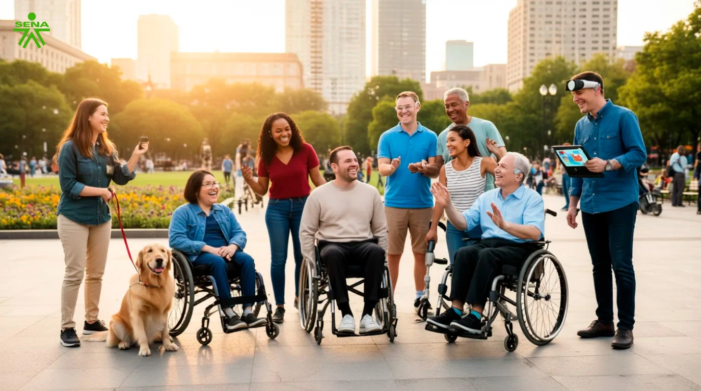

Ponte en mis zapatos:
El Reto Diario
Estás a punto de iniciar una simulación. Aquí no hay puntos ni ganadores. El objetivo es experimentar, por un momento, los desafíos diarios que enfrentan las personas con discapacidad.
Estás a punto de iniciar una simulación. Aquí no hay puntos ni ganadores. El objetivo es experimentar, por un momento, los desafíos diarios que enfrentan las personas con discapacidad.